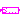
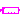

The components of this package should no longer be used. They are only provided for backward compatibility issues. Modelica language at release 2.2) should be the basis to define signal buses.
| Name | Description |
|---|---|
| SendReal | Send Real signal to bus |
|  SendBoolean | Send Boolean signal to bus |
| SendInteger | Send Integer signal to bus |
| ReceiveReal | Receive Real signal from bus |
|  ReceiveBoolean | Receive Boolean signal from bus |
| ReceiveInteger | Receive Integer signal from bus |
| Adaptor between 'old' and 'new' Real signal connectors | |
| Adaptor between 'old' and 'new' Boolean signal connectors | |
| AdaptorInteger | Adaptor between 'old' and 'new' Integer signal connectors |
 Modelica.Blocks.Interfaces.Adaptors.SendReal
Modelica.Blocks.Interfaces.Adaptors.SendReal
| Type | Name | Description |
|---|---|---|
| output | toBus | |
| input | u |
block SendReal "Send Real signal to bus" RealOutput toBus; RealInput u; equation toBus = u; end SendReal;
| Type | Name | Description |
|---|---|---|
| output | toBus | |
| input | u |
block SendBoolean "Send Boolean signal to bus" BooleanOutput toBus; BooleanInput u; equation toBus = u; end SendBoolean;
 Modelica.Blocks.Interfaces.Adaptors.SendInteger
Modelica.Blocks.Interfaces.Adaptors.SendInteger
| Type | Name | Description |
|---|---|---|
| output | toBus | |
| input | u |
block SendInteger "Send Integer signal to bus" IntegerOutput toBus; IntegerInput u; equation toBus = u; end SendInteger;
 Modelica.Blocks.Interfaces.Adaptors.ReceiveReal
Modelica.Blocks.Interfaces.Adaptors.ReceiveReal
| Type | Name | Description |
|---|---|---|
| input | fromBus | |
| output | y |
block ReceiveReal "Receive Real signal from bus" RealInput fromBus; RealOutput y; equation y = fromBus; end ReceiveReal;
| Type | Name | Description |
|---|---|---|
| input | fromBus | |
| output | y |
block ReceiveBoolean "Receive Boolean signal from bus" BooleanInput fromBus; BooleanOutput y; equation y = fromBus; end ReceiveBoolean;
 Modelica.Blocks.Interfaces.Adaptors.ReceiveInteger
Modelica.Blocks.Interfaces.Adaptors.ReceiveInteger
| Type | Name | Description |
|---|---|---|
| input | fromBus | |
| output | y |
block ReceiveInteger "Receive Integer signal from bus" IntegerInput fromBus; IntegerOutput y; equation y = fromBus; end ReceiveInteger;

| Type | Name | Description |
|---|---|---|
| newReal | ||
| oldReal |
model AdaptorReal
"Adaptor between 'old' and 'new' Real signal connectors"
RealSignal newReal;
RealPort oldReal(final n=1);
protected
connector RealPort "Connector with signals of type Real"
parameter Integer n=1 "Dimension of signal vector";
replaceable type SignalType = Real "type of signal";
SignalType signal[n] "Real signals";
end RealPort;
equation
newReal = oldReal.signal[1];
end AdaptorReal;
 Modelica.Blocks.Interfaces.Adaptors.AdaptorBoolean
Modelica.Blocks.Interfaces.Adaptors.AdaptorBoolean
| Type | Name | Description |
|---|---|---|
| newBoolean | ||
| oldBoolean |
model AdaptorBoolean
"Adaptor between 'old' and 'new' Boolean signal connectors"
BooleanSignal newBoolean;
BooleanPort oldBoolean(final n=1);
protected
connector BooleanPort "Connector with signals of type Boolean"
parameter Integer n=1 "Dimension of signal vector";
replaceable type SignalType = Boolean "type of signal";
SignalType signal[n] "Boolean signals";
end BooleanPort;
equation
newBoolean = oldBoolean.signal[1];
end AdaptorBoolean;
 Modelica.Blocks.Interfaces.Adaptors.AdaptorInteger
Modelica.Blocks.Interfaces.Adaptors.AdaptorInteger
| Type | Name | Description |
|---|---|---|
| newInteger | ||
| oldInteger |
model AdaptorInteger
"Adaptor between 'old' and 'new' Integer signal connectors"
IntegerSignal newInteger;
IntegerPort oldInteger(final n=1);
protected
connector IntegerPort "Connector with signals of type Integer"
parameter Integer n=1 "Dimension of signal vector";
replaceable type SignalType = Integer "type of signal";
SignalType signal[n] "Integer signals";
end IntegerPort;
equation
newInteger = oldInteger.signal[1];
end AdaptorInteger;
connector RealPort "Connector with signals of type Real" parameter Integer n=1 "Dimension of signal vector"; replaceable type SignalType = Real "type of signal"; SignalType signal[n] "Real signals"; end RealPort;
connector BooleanPort "Connector with signals of type Boolean" parameter Integer n=1 "Dimension of signal vector"; replaceable type SignalType = Boolean "type of signal"; SignalType signal[n] "Boolean signals"; end BooleanPort;
connector IntegerPort "Connector with signals of type Integer" parameter Integer n=1 "Dimension of signal vector"; replaceable type SignalType = Integer "type of signal"; SignalType signal[n] "Integer signals"; end IntegerPort;